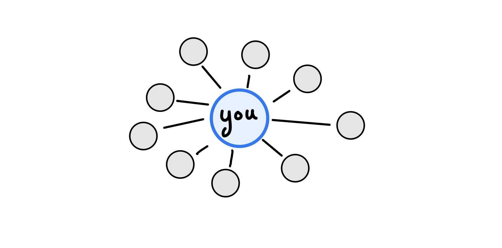
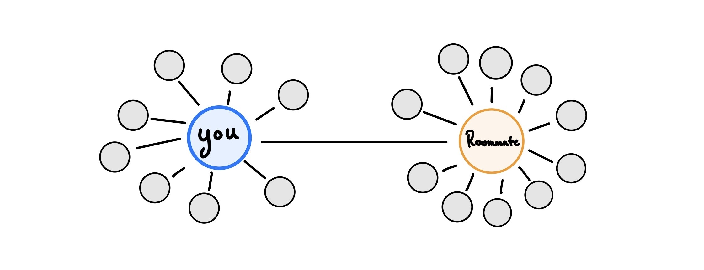
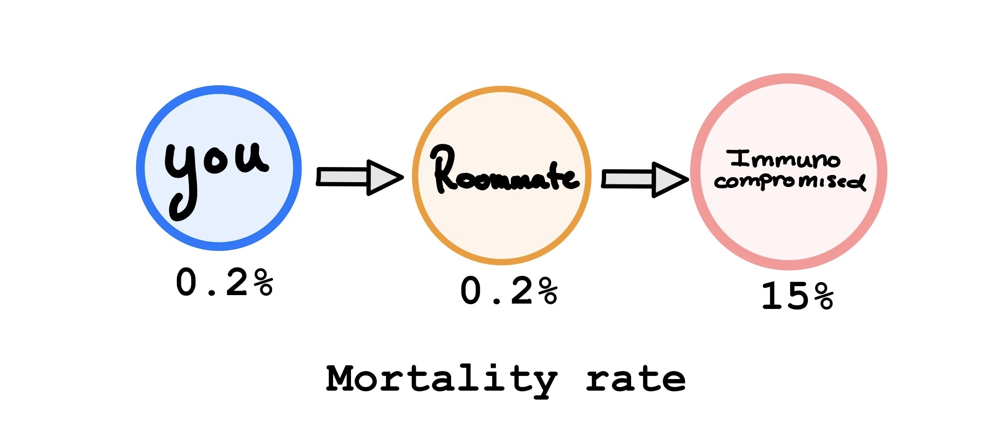
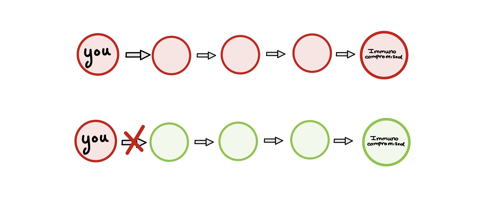
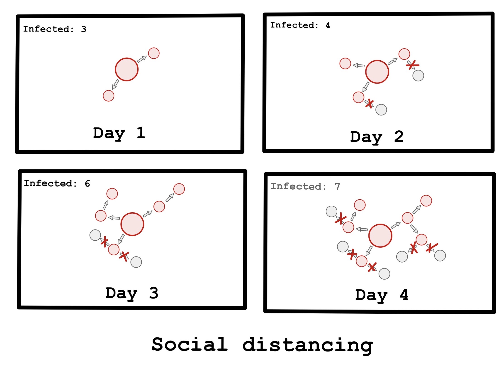

If you’ve been glued to Twitter and/or the rest of the internet like me, you’ve been hearing a lot of talk about SARS-COV-2, social distancing and #FlattenTheCurve. We’ve arrived at the point in this pandemic where our focus has shifted from containing the virus and to slowing its progression. As of writing this, there are 154,219 confirmed cases and nearly 5,700 deaths.
Naturally, none of us want to see others get infected and we’re all interested in slowing the spread of SARS-COV-2 but in the face of such a scary and global situation, it can be hard to visualize what role you can play in slowing the spread of SARS-COV-2 / COVID-19
Where do you fit into this?
I’m going to try and show you where you may fit into this. No matter how small or large, everyone is a part of a social/contact network of some sort. Parents, friends, roommates, schoolmates, co-workers you name it. If you’re moving around in your daily life, you’re interacting with these people and almost certainly some strangers as well.

Let’s say that the average person has 10 people they consistently interact with in their daily life. That would mean that there’s only 10 direct ways that you can be infected and infect others, but this gets very complicated very quickly. The issue is that our lives aren’t isolated. The people in your life have friends, co-workers, and family of their own in their contact networks. For example, if they have their own 10 people, that means there are 100 people who can infect you indirectly through your contacts. Add another layer and this goes quickly to 1,000 people, 10,000 people, and on-and-on. Theoretically, you and your actions have the ability to affect hundreds of lives as transmission chains begin to grow.

Not everyone will be “just fine”.
If you’re watching the news, you’re also seeing several statistics on case fatality rates. Case fatality rates tell us the fraction of confirmed cases that are expected to die. Since only certain infected individuals are tested and confirmed as cases, it’s not quite right to say “if you become infected, you have an X percent chance of dying” because this death rate isn’t distributed evenly between all people who have the infection. As many people have been pointing out, the elderly and immunocompromised are of particularly high risk to SARS-COV-2.
Even if you don’t know someone personally who is high-risk, some of your contacts’ contacts may be at higher risk than anyone you interact with daily. They may be immunocompromised due to old age, diseases, disabilities or medications though they may appear “just fine” at a glance and have a much higher chance of having significant complication or dying if they become infected.

Slowing infection helps provide healthcare and treatment to those in need.
If fewer people are infected each day, then fewer people need to be hospitalized. This allows healthcare workers to give proper time, attention, and care to those in need as they’re able to replenish their supplies and prevent people from going untreated as new cases come in. This way our local healthcare systems do not become overwhelmed as cases quickly peak. A drawn out, less severe outbreak is preferable in order for people to get access to the care they need if they’re infected. In fact, as we continue to increase the availability of treatment and slow the infection we will likely be able to drive down the mortality rate associated with COVID-19.
Take a step back, flatten the curve.
Flattening the curve (#FlattenTheCurve) is only possible through collective action. Our ability to slow infection and meet the healthcare demands of those in need depends on our willingness to take a step back and focus on keeping each other and especially the most vulnerable of us safe.
All pictures not credited were drawn by me! Thanks for reading.
This post was based on a twitter thread of mine embedded below:If you’ve been glued to Twitter like me, you’ve been hearing a lot of talk about social distancing and #FlattenTheCurve. Naturally, we’re all interested in slowing the spread of SARS-COV-2 but sometimes its hard to visualize how exactly one person can contribute to this. 1/9
— Marlin Figgins (@marlinfiggins) March 14, 2020
Social distancing slows infection rates.
By social distancing, you can eliminate possible transmission chains and possibly prevent someone who is at high risk from becoming sick down the line even if you personally would be fine if infected.
{% include figure image_path=“/assets/images/social-distancing-and-me/sdae-immuno-chain.JPG” height = “200” width = “100” caption=“Possible transmission chain.” %}

Through social distancing, not only do you reduce your number of contacts over time and therefore the chance of infecting someone or becoming infected but you also slow the disease’s total spread through your network.
